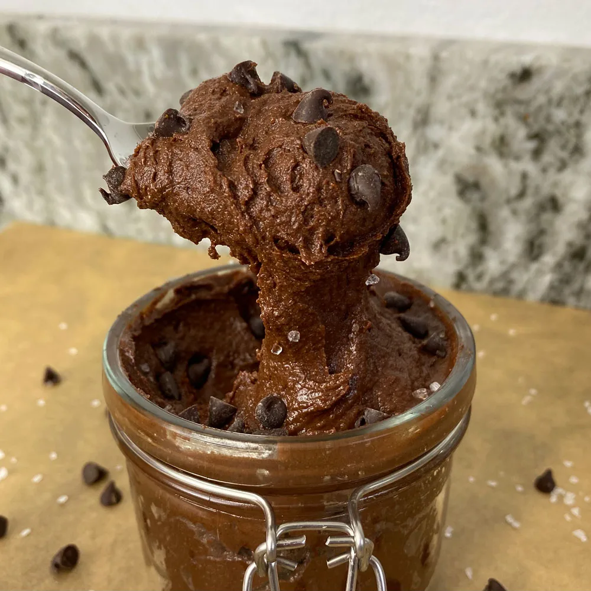

Protein Packed Edible Brownie Batter

Source
Ingredients
66g (2 Scoops) Chocolate Whey/Casein Blend Protein Powder
50g Granular Sugar Substitute
13g (2 Tbsp) Peanut Butter Powder
20g Unsweetened Cocoa Powder (I used Hershey Special Dark cocoa powder for extra rich flavor)
1/4 cup Sugar-Free Syrup (or any sticky sweetener of choice)
15g Melted Dark Chocolate
2 tablespoons minced parsley
Steps
1. Combine all of the dry ingredients (protein powder, cocoa powder, sugar substitute, powdered peanut butter) in a bowl and whisk together.
2. Melt down your chocolate in the microwave (about 30 seconds, stirring every 10 seconds to prevent it from burning) and add it to the bowl along with the canned pumpkin and syrup.
3. Mix to combine, then add two tablespoons of milk (any milk works) to bring it all together. If you use a different type of protein powder, you may not need the milk at all, which is why I like to add it last. With the whey/casein blend that I used, 2 tablespoons was the perfect amount.
4. Enjoy right away, or store in the fridge to enjoy later. If you find the protein powder or sugar substitute flavor to be too prominent, one hour in the fridge will help significantly! Personally, I loved the flavor right away, but the time in the fridge will enhance the flavor.